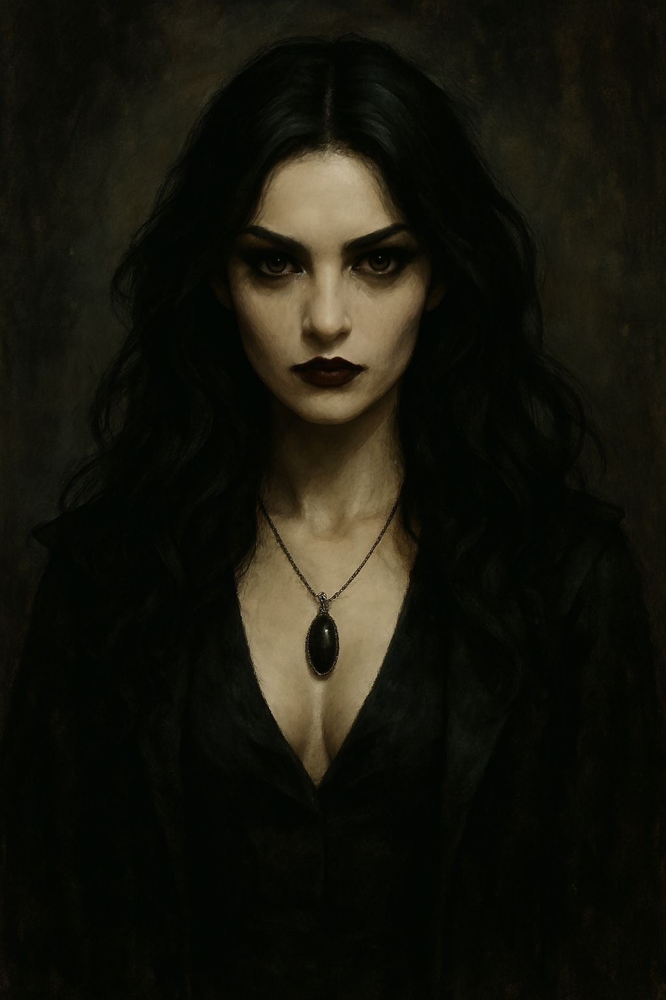

Margot
Clã: Lasombra
Alinhamento: Camarilla
Vínculos: Irmã de Mirela Sangrimor
Margot é uma Lasombra recente, movida pela busca incansável por sua irmã desaparecida. Seu Abraço foi motivado por amor, dor e obsessão por respostas. Embora sua presença seja carismática e misteriosa, pouco se sabe sobre suas verdadeiras intenções. O que é certo: Margot não veio a Belo Horizonte por acaso. Ela está aqui por alguém — ou por algo — que ainda permanece nas sombras.